Рим · круиз · Канарские острова
Возвращение в лето
Из рождественского Рима — к пляжам и океану Тенерифе. 4–15 декабря 2026, с сопровождением нашей команды.
Два сезона за одну поездку
Из зимы — в лето
Декабрьская Европа и канарское солнце в одном маршруте
Мы прилетаем в декабрьский Рим: рождественские огни, праздничная ярмарка на площади Навона, ёлка у собора Святого Петра. А через несколько дней — пальмы, тёплый океан, пляжи и сафари на верблюдах по золотым дюнам. Между зимой и летом — шесть дней отдыха на борту лайнера.

Декабрь в Риме
Рождественская атмосфера
днём 10–14 °C
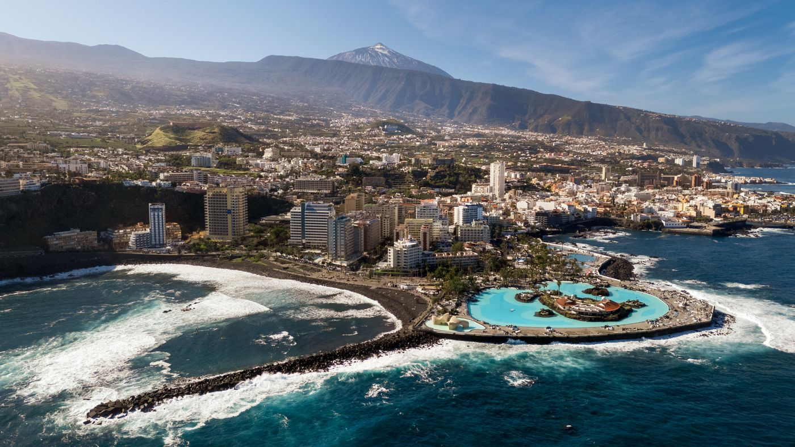
Декабрь на Канарах
Пляжи и океан
воздух 21–23 °C · вода 20–21 °C
Почему этот тур
Без утомительных переездов
Авиаперелёт в Рим, а после — путешествие на лайнере MSC Cruises без необходимости менять отели
Вильнюс — Рим самолётом
Быстрый перелёт без многочасовых очередей на границе — выезжаете утром и уже вечером гуляете по Риму
6 дней на круизе «всё включено»
Шведский стол, рестораны à la carte, бассейны, спа, детские клубы и спорт-центр — всё на борту MSC Fantasia
Отель 5★ на Тенерифе
У океана, с бассейнами и спа, полупансион: завтраки и ужины включены. Недалеко пляжи с вулканическим песком, бирюзовые лагуны и огромный зоопарк
Отель 4★ в Риме у метро
Метро в 300 метрах — линия A идёт к Испанской лестнице и Ватикану. Завтраки включены
Сопровождение нашей команды
Мы рядом на всём маршруте: от вылета из Вильнюса до посадки на рейс домой
Три формата одного путешествия
Выберите свой формат
От короткого круиза до полной программы — под ваш отпуск и бюджет
Круизный
Для тех, кому главное — море и лайнер
- 1 ночь в Риме, отель 4★ с завтраком
- Круиз «всё включено», 6 ночей
- Свободное время в Риме и на Тенерифе
- Экскурсии по желанию*
Бесконечное лето
Вся программа и свобода планировать дни самому
- 3 ночи в Риме, отель 4★ с завтраком
- Круиз «всё включено», 6 ночей
- 2 ночи на Тенерифе, отель 5★ с завтраками и ужинами
- Свободное время в Риме и на Тенерифе
- Экскурсии по желанию*
Лето под ключ
Экскурсии и входные билеты уже включены
- 3 ночи в Риме, отель 4★ с завтраком
- Экскурсии по Риму и Ватикану
- Круиз «всё включено», 6 ночей
- 2 ночи на Тенерифе, отель 5★ с завтраками и ужинами
- Экскурсия по восточной части острова «Неизведанный Тенерифе», посещение Национального парка Тейде и Лоро-парка с билетами
* Дополнительные экскурсии оплачиваются отдельно — подробнее в разделе «Групповые экскурсии».
Во всех форматах
Путешествие, собранное под вас
Задержаться в Риме, добавить дни у океана, изменить даты — мы с радостью подстроим любой формат под ваши планы. Просто расскажите о них менеджеру.
12 дней · 11 ночей
Маршрут по дням
Вильнюс → Рим → круиз по Атлантике → Канарские острова → Варшава
Прилёт в Рим
Перелёт Вильнюс → Рим, трансфер, заселение. Свободное время.
Ватикан
Свободное время или экскурсия «Музеи Ватикана + Сикстинская капелла»*
Античный Рим
Свободное время или обзорная экскурсия по Риму* (Колизей, Форум, Капитолий, Трастевере)
Посадка на лайнер
Переезд в порт Чивитавеккья (1–1,5 ч). Отправление около 18:00, первый вечер на борту.
Открытый океан
Дни на борту: бассейны, спа, рестораны, спорт и отдых по пути к Канарам.
Гран-Канария
Стоянка около 09:00–20:00 в центре Лас-Пальмаса. Свободное время либо экскурсия по историческому центру Вегета с посещением океанариума*.
Ла-Пальма
Свободное время.
Тенерифе
Высадка в Санта-Крусе, переезд в Пуэрто-де-ла-Крус, заселение. Свободное время или экскурсия «Неизведанный Тенерифе»*
Тейде и Лоро-парк
Свободное время или экскурсия на вулкан Тейде (высшую точку Испании) и в Лоро-парк*
Вылет домой
Свободное утро, трансфер в аэропорт, вылет Тенерифе → Варшава.
* Экскурсии по желанию — подробнее в разделе «Групповые экскурсии». Программа ориентировочная: время стоянок может уточняться.
4–7 декабря
Рим
Вечный город в рождественском убранстве

Колизей на закате
Город, где по одному кварталу можно читать историю Европы — от Древнего Рима до барокко. Исторический центр входит в список Всемирного наследия ЮНЕСКО и компактен: главные места — в пределах пешей прогулки или пары остановок метро. В декабре Рим украшен рождественскими огнями, а на площади Навона, как правило, уже с 1 декабря работает праздничная ярмарка.
Достопримечательности и входные билеты
Цены — ориентировочные для взрослого билета в сентябре 2026 года; при онлайн-бронировании может добавляться сервисный сбор.
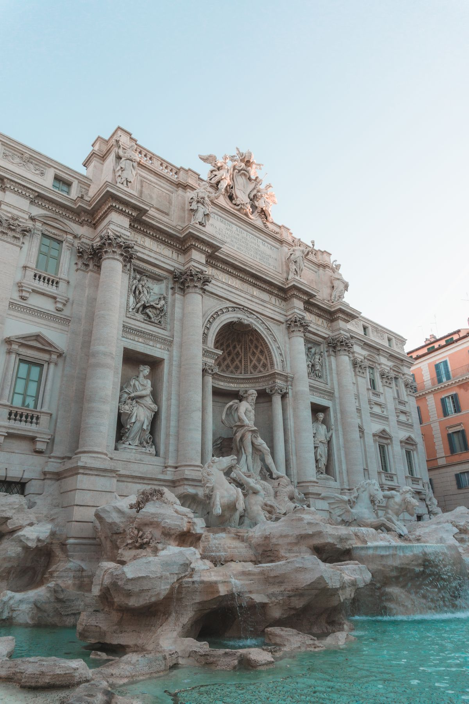
Фонтан Треви
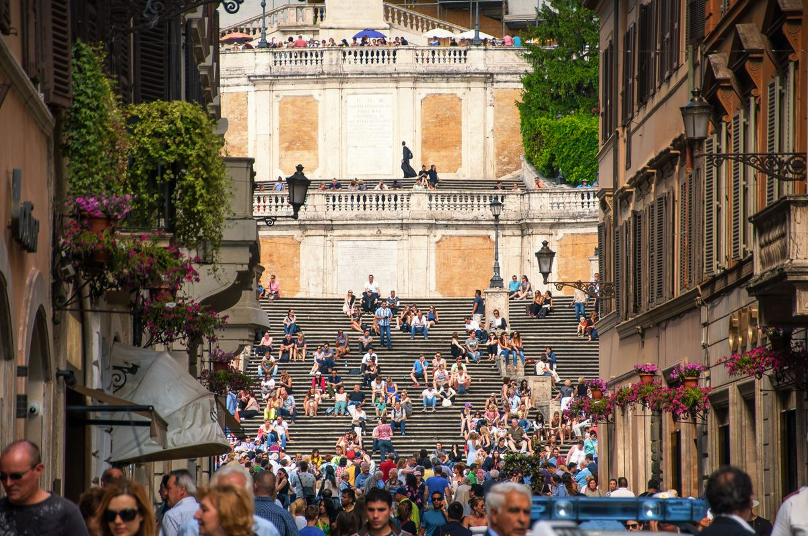
Испанская лестница
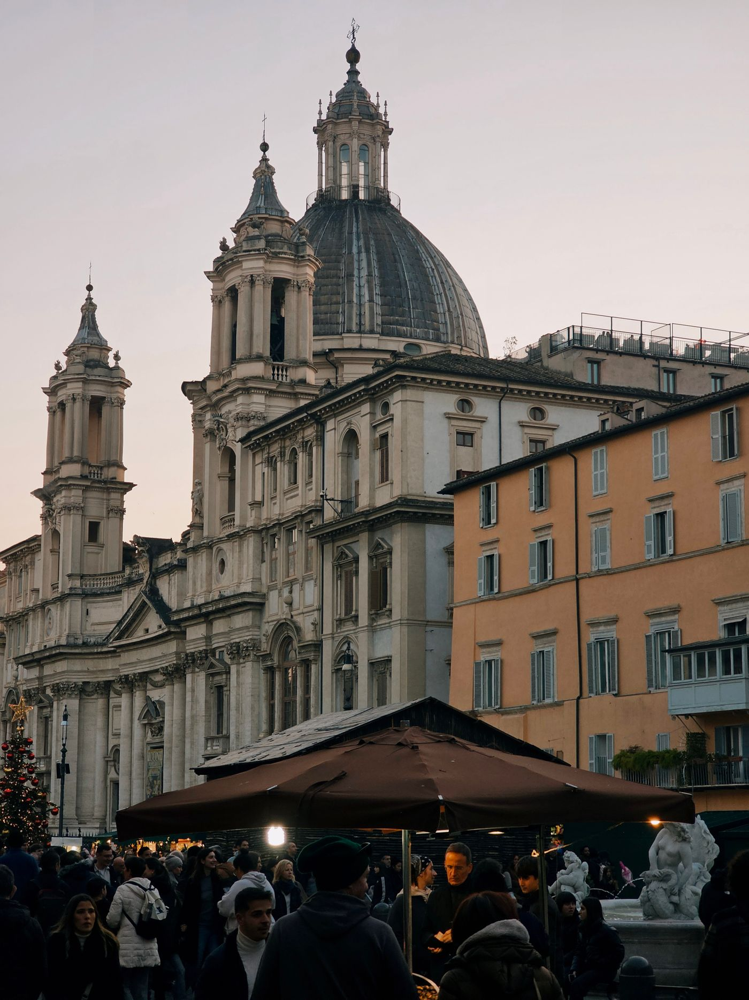
Площадь Навона
Где живём в Риме

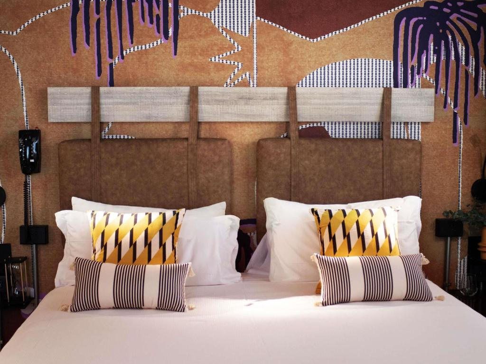
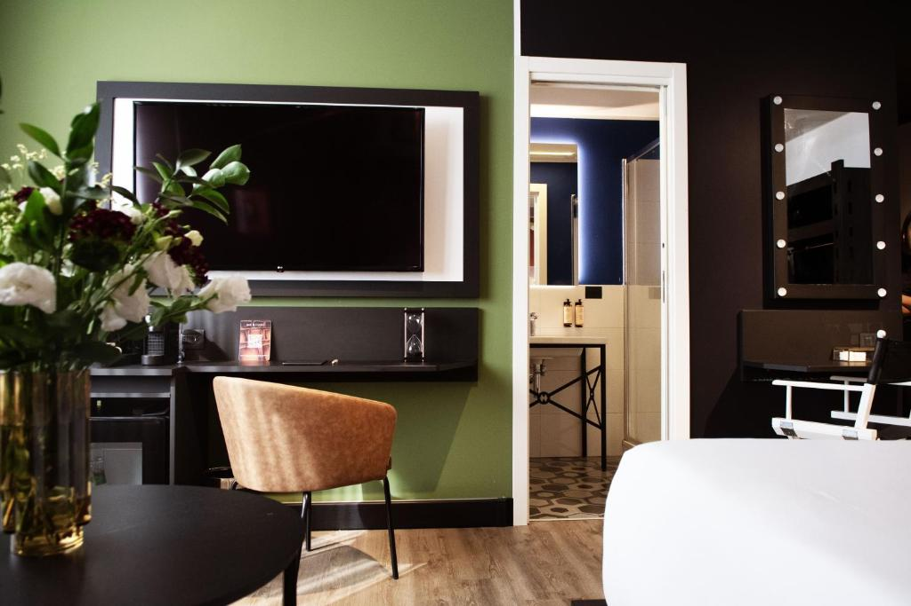
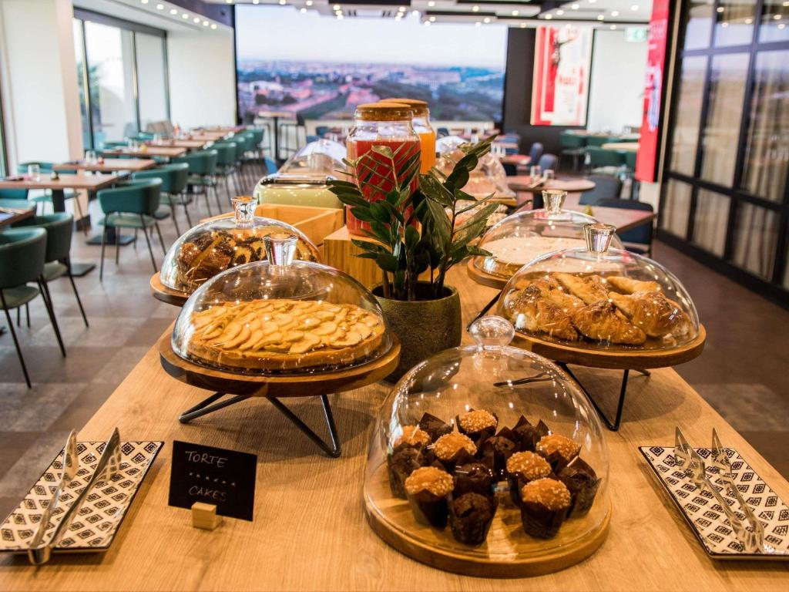
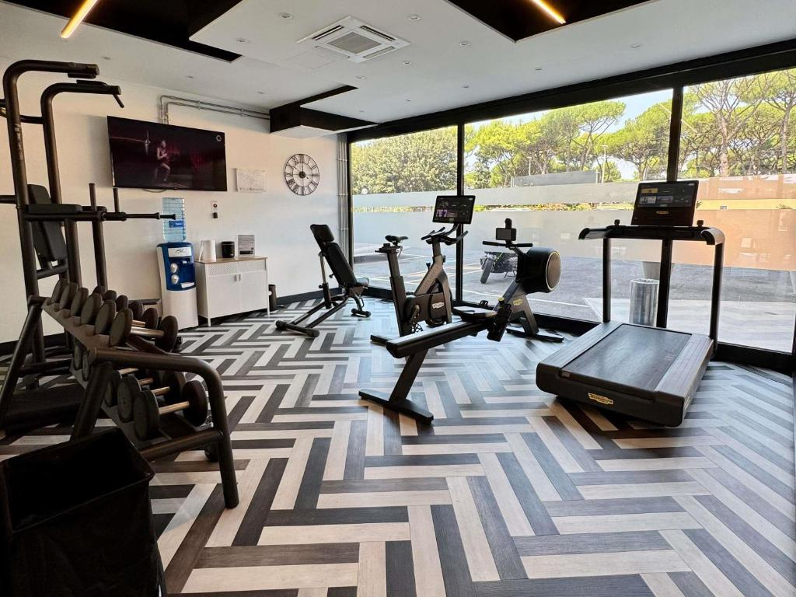
Mercure Roma Cinecittà ★★★★
Современный четырёхзвёздочный отель рядом с метро: утром — несколько остановок до главных достопримечательностей, вечером — спокойный район для отдыха после насыщенного дня.
- 300 м до станции метро Cinecittà (линия A): без пересадок до вокзала Термини, Испанской лестницы и Ватикана (ст. Ottaviano)
- 126 номеров в современном индустриальном стиле с кинотематикой: кондиционер, мини-бар, телевизор, бесплатный Wi-Fi
- Ресторан итальянской кухни, лаунж-бар, тренажёрный зал
- По соседству — знаменитая киностудия Чинечитта, где снимали «Сладкую жизнь», и торговый центр
Отель указан ориентировочно. При бронировании возможна замена на отель аналогичной категории с сопоставимым расположением.
7–13 декабря · 6 ночей
Круиз «всё включено»
Лайнер MSC Fantasia · Чивитавеккья → Гран-Канария → Ла-Пальма → Тенерифе

Бассейн и джакузи на открытой палубе MSC Fantasia
Из декабрьского Рима — прямиком к пальмам и океану. Лайнер MSC Fantasia сам везёт вас от зимы к лету: не нужно собирать чемоданы, искать транспорт и ехать ночами. Вы засыпаете в каюте, а просыпаетесь всё ближе к солнцу. Маршрут заходит на три острова Канарского архипелага.
На борту
Шведский стол
Завтраки, обеды и ужины в формате буфета
Рестораны à la carte
Ужины с обслуживанием и сменой блюд
Бассейны
Бассейны и джакузи на открытых палубах
Спа
Время для отдыха и восстановления
Детские клубы
Программы для детей разного возраста
Спорт-центр
Тренажёрный зал и спортивные площадки
Маршрут круиза
MSC Fantasia
Каюты и апгрейд
Выберите, каким будет ваш дом на время круиза
Стоимость тура рассчитана на внутреннюю каюту. Возможен бесплатный апгрейд — повышение категории каюты по сравнению с изначальной бронью.
Листайте вбок →

Внутренняя каюта
~17 м²Уютная каюта без окна — для тех, кто проводит день на палубах и на берегу

Каюта с окном
~18 м²Дневной свет и вид на океан прямо из каюты

Каюта с балконом
~19 м² + балкон ~4 м²Утренний кофе на собственном балконе и закаты над Атлантикой

Сьют MSC Yacht Club
от ~23 м², с балконом«Корабль в корабле»: 71 сьют, консьерж-служба, приватные бар, лаунж, бассейн и джакузи, отдельный вход в спа

Гран-Канария
11 декабря · Лас-Пальмас
Самый большой город Канар и настоящий курорт: лайнер швартуется прямо в центре, и за день стоянки можно успеть и старый город, и пляж. Отсюда же — поездка к дюнам Маспаломас и сафари на верблюдах.

Ла-Пальма
12 декабря · Санта-Крус-де-ла-Пальма
Самый зелёный остров маршрута — вулканы, леса и одно из самых чистых небес в мире. Колониальный старый город начинается в нескольких минутах ходьбы от причала.
13–15 декабря
Тенерифе
Утром — снег на вершине вулкана, днём — океан и пляж

Пляж Лас-Тереситас и деревня Сан-Андрес, вдали — вулкан Тейде
Остров вечной весны. Лайнер приходит в Санта-Крус утром 13 декабря, после высадки — переезд на север, в курортный Пуэрто-де-ла-Крус. Дальше — свободное время: колониальная Ла-Лагуна, вулкан Тейде, Лоро-парк, пляжи и старинная Ла-Оротава, самостоятельно или с экскурсией по желанию.
Достопримечательности и входные билеты
Где живём на Тенерифе

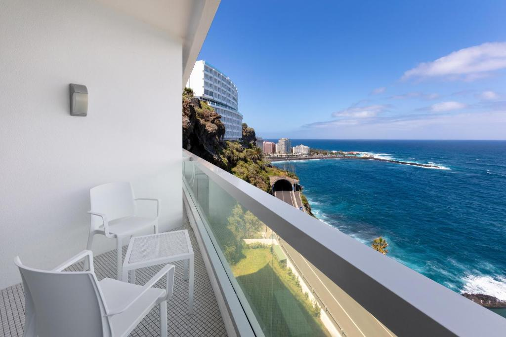
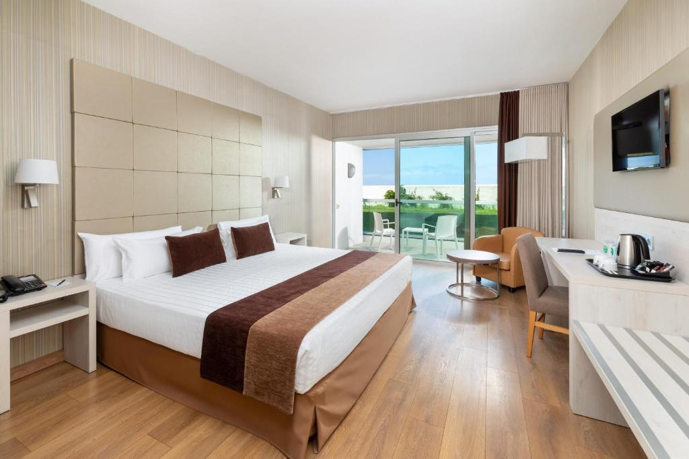
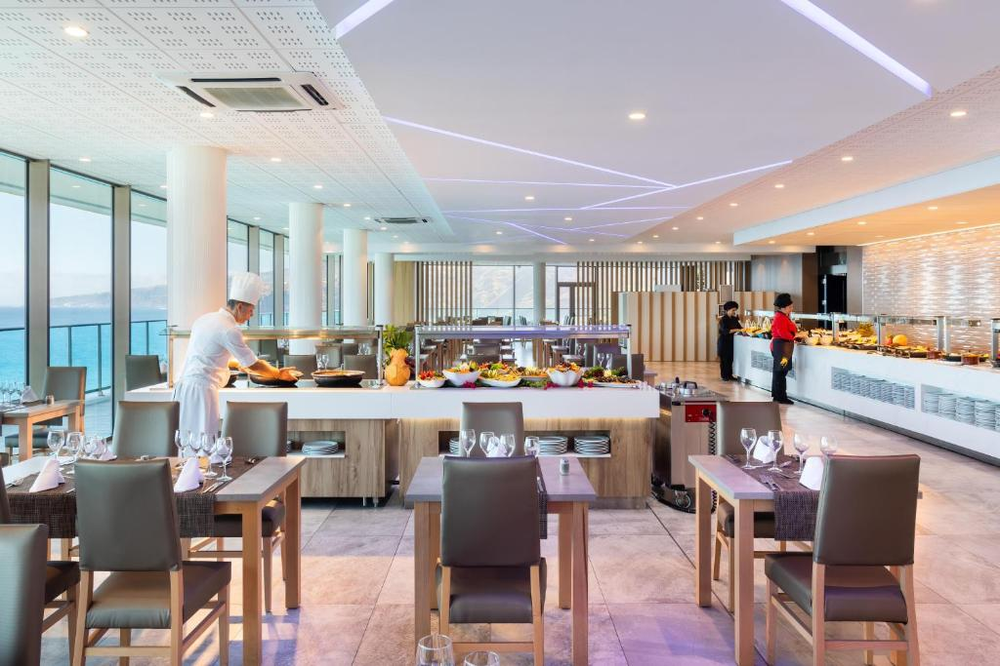
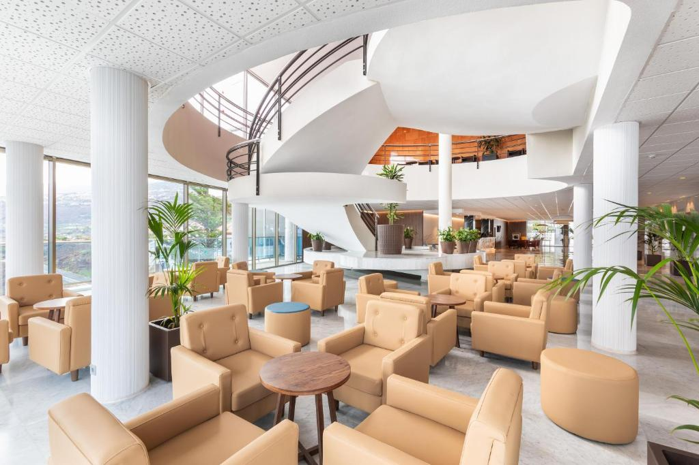
Hotel Best Semiramis ★★★★★
Пятизвёздочный курортный отель на берегу Атлантики — достойный финал путешествия: утро у бассейна с видом на океан, спа после дня на вулкане и ужин на закате.
- На берегу океана в тихом районе Ла-Пас, с видами на море и северное побережье острова
- Полупансион: завтраки и ужины включены
- Открытый и крытый бассейны, детский бассейн, бар у бассейна, терраса на крыше
- Спа с массажем и уходовыми процедурами, сауна, тренажёрный зал, детский клуб, вечерняя программа
- 5 минут пешком до смотровой площадки Ла-Пас, 7 минут — до Ботанического сада, около 10 минут — до остановки бесплатного автобуса в Лоро-парк
Отель указан ориентировочно. При бронировании возможна замена на отель аналогичной категории.
Пляжи рядом · декабрь: воздух 21–23 °C, вода 20–21 °C

Playa Jardín
Чёрный вулканический песок и сад Сесара Манрике
Лаго-Мартианес
Лагуны с морской водой — если не хочется в открытый океан
Playa del Bollullo
Дикий живописный пляж в скалах, около 2,5 км от отеля
По желанию группы
Групповые экскурсии
Можно гулять самостоятельно — а можно с гидом
Все достопримечательности программы доступны для самостоятельного посещения — входные билеты указаны выше. Если наберётся 20 желающих, мы организуем групповые экскурсии с гидом:
Листайте вбок →
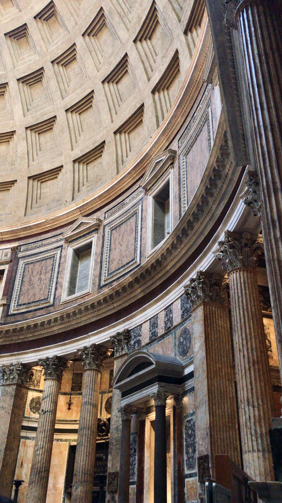
Обзорная экскурсия по Риму
Главные площади, фонтаны и история Вечного города

Ватикан
Музеи Ватикана, Сикстинская капелла и собор Святого Петра
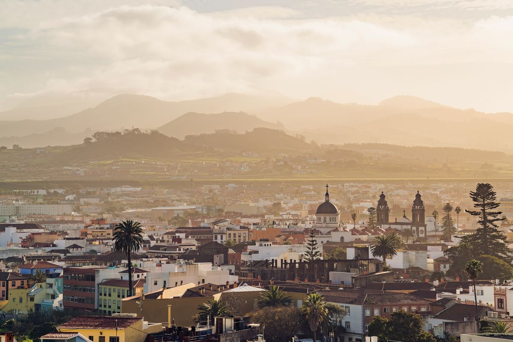
Тенерифе и Ла-Лагуна
Санта-Крус и колониальный город из списка ЮНЕСКО

Тейде и Лоро-парк
Вулкан, лунные пейзажи и знаменитый зоопарк
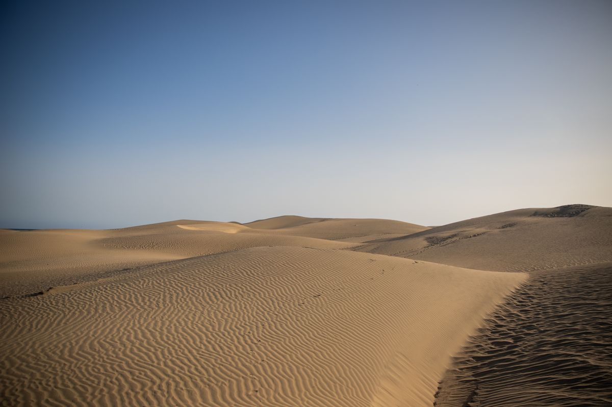
Дюны и сафари на верблюдах
Прогулка по золотым песчаным дюнам Канарских островов
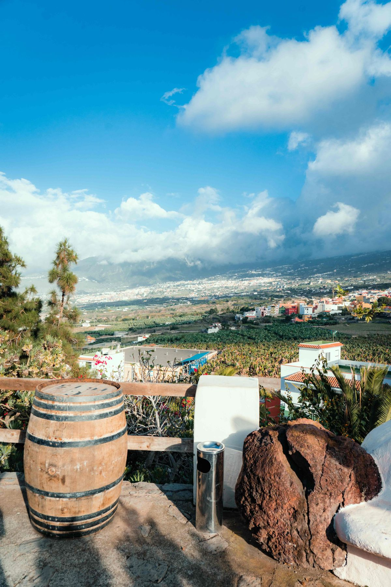
Винодельни Тенерифе
Знакомство с канарским вулканическим вином и дегустация

«Неизведанный Тенерифе»
Загадочный восток острова: дикие берега, горы Анага и пляж с песком из Сахары
Сопровождение нашей команды
Мы рядом на всём маршруте
От вылета из Вильнюса до вылета с Тенерифе с вами будет наш представитель: поможем с заселением, посадкой на лайнер, трансферами и ответим на любые вопросы в пути.
Визовая поддержка
Поможем с визой
Испанский шенген для туристов без действующей визы
Нет действующей шенгенской визы — не повод отказываться от поездки. Мы поможем оформить испанскую визу: подготовим документы по туру, запишем на подачу и будем на связи на каждом шаге. Документы подаются в визовый центр Испании в Минске.
Как это работает
Консультация
Проверим паспорт и составим список документов под вашу ситуацию
Пакет документов
Поможем с анкетой и подготовим бронь отелей, круиза и авиабилетов для консульства
Запись на подачу
Запишем вас в визовый центр Испании в Минске — без записи документы не принимают
Подача и биометрия
Вы лично подаёте документы и сдаёте отпечатки пальцев, а мы следим за решением
Что понадобится от вас
- Загранпаспорт: действует не менее 3 месяцев после возвращения, есть минимум 2 чистые страницы
- Цветное фото 3,5×4,5 см
- Справка с места работы или выписка с банковского счёта
- Медицинская страховка на все дни поездки
Точный список документов подскажет менеджер: требования консульства могут меняться.
Заявка на тур
Забронируйте место в группе
Оставьте телефон — менеджер перезвонит, ответит на вопросы, рассчитает апгрейд каюты и поможет с визой.